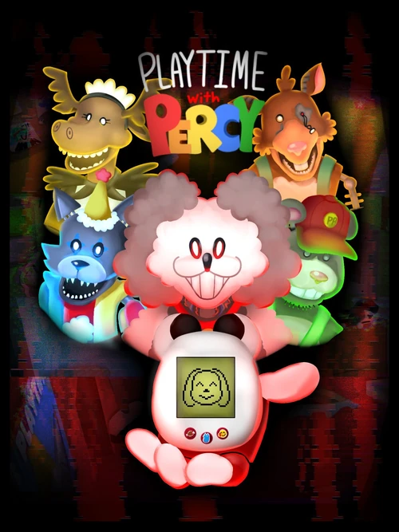

PLAYTIME WITH PERCY
desenvolverdor
FazieFunbearhistoria
Nick, o personagem principal do jogo, trabalhou anteriormente para Percy Poodle & Co., mas foi demitido inesperadamente, apesar de ser um trabalhador esforçado. Isso leva a problemas legais para Nick enquanto ele luta para encontrar um novo emprego e pagar sua dívida. Um dia, seu ex-chefe liga para ele e lhe oferece US$ 250 para passar a noite no Percy's Playhouse para evitar o roubo de artefatos valiosos antes de serem vendidos. O teatro está programado para demolição devido ao seu declínio desde que Nick foi demitido. Com sua paixão pelo elenco animatrônico e sua necessidade desesperada por renda, Nick concorda relutantemente. Enquanto Nick trabalha no teatro, ele usa um dispositivo portátil chamado Pal Percy para passar o tempo. O dispositivo é um dispositivo portátil no estilo Tamagotchi que precisa ser constantemente alimentado, receber água e se divertir. Enquanto afasta os animatrônicos, que se acredita terem sido desligados por Nick, a jogabilidade se concentra em completar um determinado número de tarefas para progredir durante a noite. A cada noite, mais animatrônicos, incluindo alguns murchados e inacabados, tornam-se ativos enquanto Nick continua seu trabalho. Após cada noite, Nick deve completar missões adicionais para auxiliar o chefe na preparação dos animatrônicos e artefatos para venda antes da demolição. Isso envolve leiloar animatrônicos pelo preço ideal, testar máquinas de fliperama e consertar os animatrônicos antes de serem colocados no varejo. Durante esses segmentos, os animatrônicos ainda estão ativos e caçam você ativamente no escuro. Depois de terminar seu turno de quarta-feira, Nick encontra um disco que pode usar com sua televisão. Deixá-lo para trás teria permitido que o jogo progredisse normalmente, mas pegá-lo leva Nick a tentar reproduzi-lo na televisão de sua casa antes de ir para a cama. Após a saída de Nick, a fita lança luz sobre a natureza corrompida do brinquedo Pal Percy, exclamando que ele representa um perigo para crianças e adultos. Apesar dos sinais de corrupção se tornarem mais evidentes à medida que o jogo avança, Nick opta por ignorá-los e continua com seu trabalho no teatro. Durante a última noite de seu trabalho, Nick é encarregado de consertar o animatrônico Percy Poodle. Porém, a bateria da máquina começa a falhar, emitindo fumaça pelo estômago. O Chefe instrui Nick a encontrar uma fonte alternativa de energia para Percy. Em uma tentativa desesperada, Nick decide usar a bateria de seu brinquedo Pal Percy para alimentar o animatrônico até encontrar uma nova bateria. Sem o conhecimento de Nick, a natureza corrompida do brinquedo Pal Percy resulta na infecção do animatrônico, causando seu mau funcionamento e, por fim, assumindo o controle dele. Aterrorizado com o ataque dos animatrônicos, Nick corre desesperadamente e encontra refúgio no Armário de Armazenamento sem perceber. Lá dentro, ele deve encontrar uma maneira de se defender contra Pal Percy e as versões corrompidas de outros animatrônicos, bem como versões protótipos dos brinquedos Pal Percy que tentam se agarrar a ele. A noite é dividida em seis fases, cada uma adicionando um desafio diferente para Nick superar. Depois que Nick passa dolorosamente por todas as seis fases, o amigo Percy confronta Nick diretamente. Exige que ele brinque com ele por toda a eternidade, mas, finalmente, Nick reúne coragem para recusar. Enfurecido com a recusa de Nick, Pal Percy o amarra com fios, preparando-se para matá-lo. No momento em que Pal Percy está prestes a lançar seu ataque mortal, o brinquedo é subitamente distraído por alguém falando. Esta interrupção inesperada desvia a atenção de Pal Percy de Nick. Quando a bola de demolição bate no prédio, ela colide com Pal Percy, fazendo com que o brinquedo seja arrancado do corpo corrompido de Percy Poodle, tornando o brinquedo de Pal Percy inoperante. O brinquedo faz uma última tentativa de manipular Nick, mas Nick sai correndo do estabelecimento destruído e é recebido por seu chefe, que estava preocupado com seu paradeiro. Juntos, eles abandonam o local e decidem sair para comer. No entanto, mesmo enquanto desfrutam da refeição, eles não sabem que o brinquedo Pal Percy ainda está ativo, provavelmente esperando pela próxima vítima. jogabilidade
Em contraste com a fórmula convencional de Five Nights at Freddy's, os segmentos noturnos neste jogo não são centrados no tempo. Em vez disso, os jogadores são obrigados a completar um número específico de minijogos em seu brinquedo Pal Percy, semelhante ao Tamagotchi, para progredir durante a noite. À medida que a noite avança, o nível de dificuldade e velocidade aumenta, e mais animatrônicos são introduzidos, exigindo que os jogadores modifiquem sua estratégia continuamente para atender aos requisitos de todos os animatrônicos. Não fazer isso pode resultar em um jumpscare. Mother Moose e Charlie Cat funcionam da mesma forma, porém são objetivamente opostos. Ambos os animatrônicos alcançarão rapidamente o sistema de ventilação antes de entrarem no escritório. Mother Moose exige que o jogador mantenha o monitor ligado e cesse o contato visual, enquanto Charlie Cat deseja o contrário. Percy Poodle , o principal vilão do jogo, avançará gradualmente em direção à porta do jogador após se manifestar fora de seu escritório. Quando começarem a bater na porta, o jogador precisa segurá-la e prendê-la com um mecanismo de trava. O fazendeiro Felix é uma adição posterior ao jogo, aparecendo esporadicamente fora da janela do escritório do jogador conforme as noites avançam. Seus olhos emitirão uma tonalidade distinta, e o jogador deverá utilizar o painel no canto superior esquerdo da tela para clicar na cor correspondente. Rowen Rat é o último antagonista antes da batalha final contra o chefe. Seu paradeiro só pode ser monitorado em uma tela adicional que pode ser acessada pressionando o botão A ou D do teclado. Esta tela fornece cobertura de todos os quatro cantos da sala a partir de um ângulo cego. Em intervalos regulares, a tela detectará Rowen Rat enquanto ele vaga pela sala, e quando a tela piscar em vermelho, o jogador deve navegar até a câmera correspondente e piscar Rowen Rat com o flash da câmera para evitar que ele chegue ao escritório do jogador através de um caminho subterrâneo.curiosidades
Originalmente, Playtime with Percy tinha dois finais possíveis, dependendo se o jogador levava o disco para casa ou não. Não houve batalha de chefe no plano inicial, e a sequência após Reparar Percy pretendia consistir apenas em um monólogo, em vez de uma noite completa